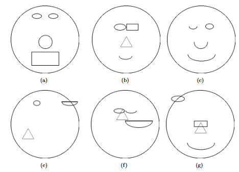
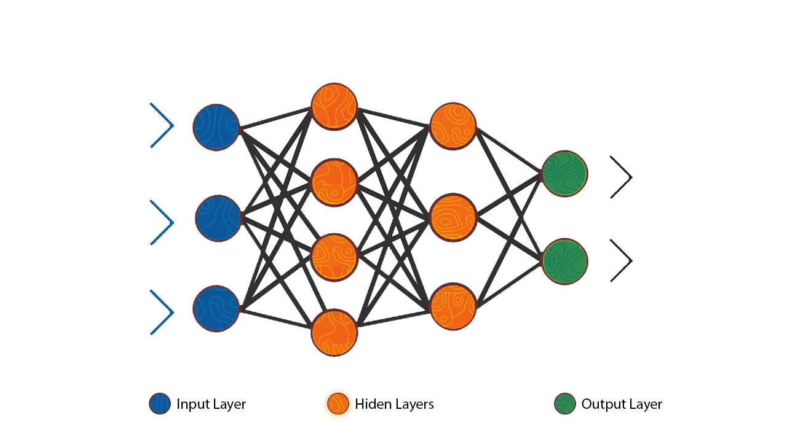

A collection of projects that I have undertaken, related to the field of AI and ML.

Interpreting hidden layers of CNNs Using Abstracted Dataset
This project developed a custom dataset of cartoon faces and non-faces to support interpretable convolutional neural network (CNN) research. Initial work focused on dataset creation, followed by experiments testing how filter number and size affect model performance. The results inform future CNN design, balancing simplicity and accuracy, with smaller filter sets (2–4 filters) and 3×3 sizes recommended.

Credit Card Default Prediction with Neural Networks
This project details key considerations in the construction of a neural network architecture in a highly biased dataset to predict whether a person will default on their credit card. This includes systematic hyperparamter tuning and their effects. The results highlight the difficultly in obtaining a high accuracy with inbalanced data and an inability to effectively perform feature engineering.

Investigation of Random Walks
An investigation into new types of technology used in horror film genre by examining Causeway Films' talk to me directited by the Phillipou brothers.
Phone
+44 07982 823640Address
CambridgeUnited Kingdom